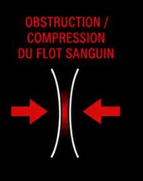
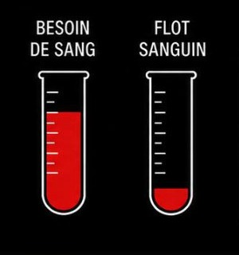
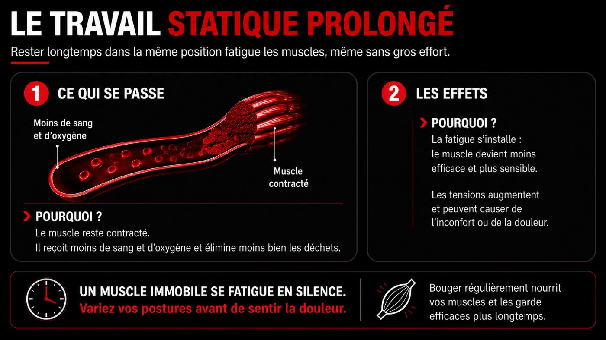
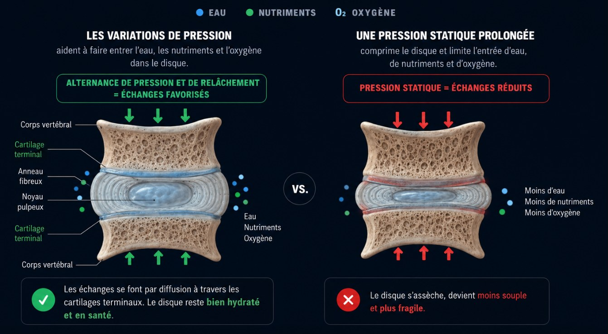
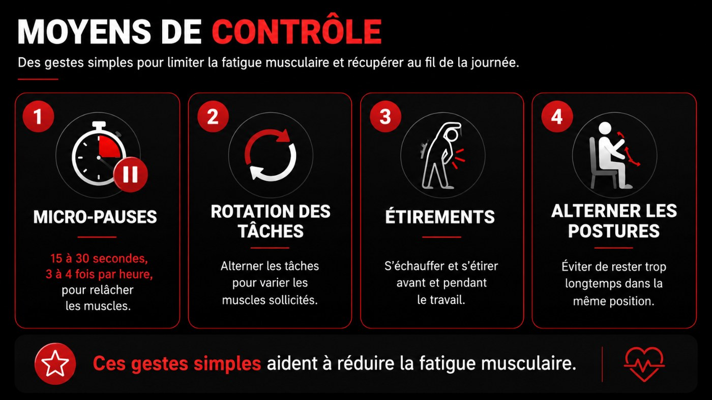

Fatigue musculaire et charge de travail
Un TMS apparaît quand la charge imposée au corps dépasse, de façon répétée, sa capacité à récupérer.
Ce qui augmente la charge
- Force, gestes répétés, longues heures
- Postures contraignantes, vibrations
- Froid, stress, cadence élevée
Ce qui restaure la capacité
- Sommeil suffisant et de qualité
- Hydratation, alimentation, activité physique
- Pauses, gestion du stress
Percevoir l'effort : l'échelle de l'effort perçu
Une même force peut représenter un effort très différent d'une personne à l'autre. L'échelle de l'effort perçu (aussi appelée échelle de Borg) aide à mettre un chiffre sur ce que ton corps ressent, de 0 (aucun effort) à 10 (effort maximal).
Les conséquences de la fatigue musculaire
À force d'être sollicité sans récupération, le muscle s'épuise. Trois conséquences s'enchaînent :
Travail musculaire : dynamique ou statique
Le muscle a besoin de sang pour travailler. Quand la contraction reste maintenue, le flot sanguin diminue. Compare les deux :


- Le muscle reste contracté.
- Le flot sanguin est comprimé.
- La fatigue arrive plus vite.
- Le risque de douleur augmente.
Bon apport sanguin : oxygène et nutriments arrivent au muscle.
Apport sanguin réduit : moins d'oxygène, moins de nutriments.
-
Privé de sang, le muscle manque d'oxygène et de carburant. Il se contracte moins bien et se fatigue beaucoup plus vite, même pour un effort modéré.
-
La tension continue et le manque d'irrigation réveillent les capteurs de douleur du muscle : ça tire, ça brûle ou ça lance. C'est le premier signal d'alarme.
-
Sans circulation pour les évacuer, les déchets de l'effort (acide lactique, ions) s'accumulent dans le muscle. Ils entretiennent la fatigue et l'irritation des tissus.
-
Des petites zones du muscle restent contractées en nœud. Sensibles à la pression, elles peuvent renvoyer une douleur ailleurs dans le corps (douleur référée).
-
Le muscle finit par rester crispé en permanence, douloureux au moindre contact. À ce stade, le repos seul ne suffit plus toujours à le relâcher.
Réf. : Baillargeon et Patry, 2003; CCHST; INRS.

AgrandirRester figé, assis ou debout, fatigue aussi : change de position toutes les 20 à 30 minutes.
Travail assis prolongé
Même assis, les muscles travaillent en statique pour te maintenir en position. Rester assis longtemps fatigue le corps et augmente la pression sur les disques du bas du dos.
Les variations de pression
aident à faire entrer l'eau, les nutriments et l'oxygène dans le disque.
Une pression statique prolongée
comprime le disque et limite l'entrée d'eau, de nutriments et d'oxygène.
Bouger souvent aide à protéger les disques du bas du dos.

AgrandirLes disques se nourrissent par le mouvement : varier la pression y fait entrer l'eau, les nutriments et l'oxygène ; une pression statique prolongée les prive.
Moyens de contrôle
Des gestes simples pour limiter la fatigue musculaire et récupérer au fil de la journée.

AgrandirMicro-pauses
15 à 30 secondes, 3 à 4 fois par heure, pour relâcher les muscles.
Rotation des tâches
Alterner les tâches pour varier les muscles sollicités.
Étirements
S'échauffer et s'étirer avant et pendant le travail.
Alterner les postures
Éviter de rester trop longtemps dans la même position.